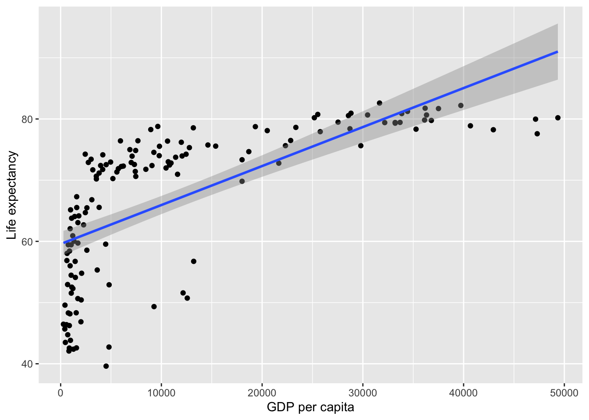
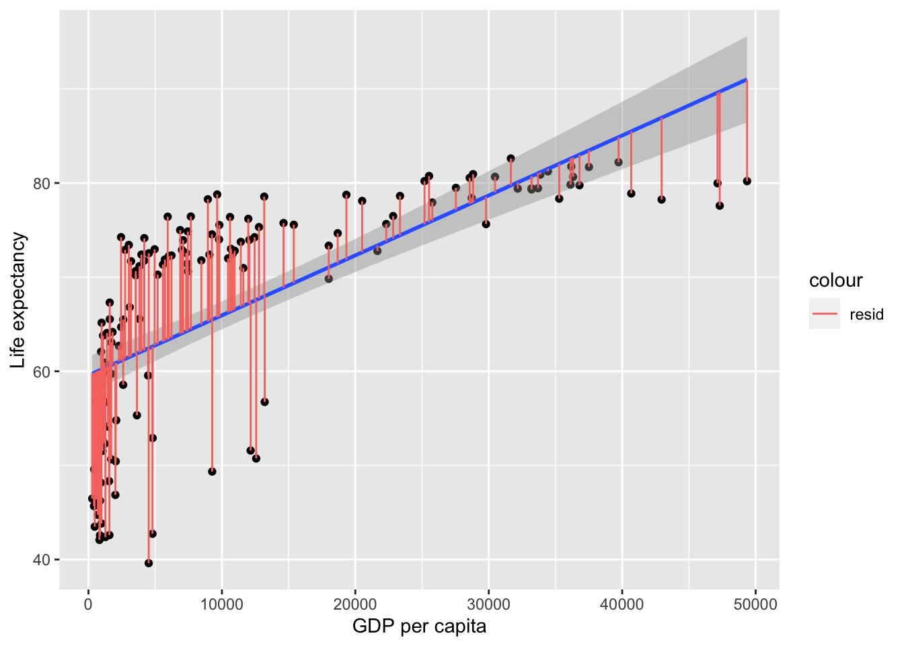

Simple regression (R)
Course Overview
Red means that the page does not exist yet
Orange means that the page is started
Prediction using regression
Simple regression, also known as linear regression, uses some overlapping concepts with correlation. However, unlike correlation (which quantifies the strength of the linear relationship between a pair of variables), simple regression allows you to make predictions of an outcome variable based on a predictor variable.
For example, regression can be used to predict Life Expectancy in 2007 from GDP. Lets start by visualising the association between them:
library(gapminder)
library(ggplot2)
# create a new data frame that only focuses on data from 2007
gapminder_2007 <- subset(
gapminder, # the data set
year == 2007
)
ggplot(
data = gapminder_2007,
aes(
x = gdpPercap,
y = lifeExp,
)
) +
# add data points as dots
geom_point() +
# add a line of best fit:
geom_smooth(
method='lm', # linear model
formula=y~x # predict y from x
) +
# clearer x-axis label
xlab("GDP per capita") +
# clearer y-axis label
ylab("Life expectancy")
Linear regression analysis operates by drawing the best fitting line (AKA the regression line; see the blue line above) through the data points. But this does not imply causation, as regression only models the data. Simple linear regression can’t tell us exactly what is influencing what (i.e. whether GDP per capita increases life expectancy), this will depend on the design of your study or your broader theoretical understanding. But for now, we can investigate whether \(gdp\) predicts \(life\) \(expectancy\). The formula for the above line could be written as:
\[ Life Expectancy = intercept + gradient * GDP \]
gradient reflects how steep the line is. This is also known as a beta value or estimate (of the beta) by linear model functions.
intercept is the point at which the regression line crosses the y-axis, i.e. what the y-value is when x = 0.
Let’s use coding magic to find out the intercept and the gradient (AKA slope):
# turn off scientific notation so that the numbers are not e-numbers (and thus easier to read)
options(scipen = 999)
# Make a model of a regression
life_expectancy_model <- lm(
data = gapminder_2007,
formula = lifeExp ~ gdpPercap # predict life expectancy from GDP
)
# report the intercept and the gradient (AKA slope) of each predictor (which will only be GDP)
life_expectancy_model$coefficients (Intercept) gdpPercap
59.5656500780 0.0006371341 Coefficients are either the intercept (\(y\)-value when \(x\) = 0) or the beta/gradient values for each predictor. The above shows that the intercept if 59.566, and that for every 1 unit ($) of GDP there is .0006 units more of life expectancy (or, in more intuitive terms, for every extra $10,000 dollars per person the GDP increases, the life expectancy goes up by 6 years).
The above equation allows us to predict y-values from the graph, but not perfectly, leaving residuals. A more complete formula for the outcome can be represented as follows:
\[ outcome = intercept + gradient * predictor + residual \]
- residual reflects what’s left over, and is not represented in the line of best fit formula because you can’t predict what’s left over. Residuals reflect the gap between each data point and the line of best fit:
gapminder_2007$fitted = life_expectancy_model$coefficients[1] + # intercept
life_expectancy_model$coefficients[2] * # gradient
gapminder_2007$gdpPercap
ggplot(
data = gapminder_2007,
aes(
x = gdpPercap,
y = lifeExp,
)
) +
# add data points as dots
geom_point() +
# add a line of best fit:
geom_smooth(
method='lm', # linear model
formula=y~x # predict y from x
) +
# clearer x-axis label
xlab("GDP per capita") +
# clearer y-axis label
ylab("Life expectancy") +
# add lines to show the residuals
geom_segment(
aes(
xend = gdpPercap,
yend = fitted,
color = "resid"
)
)
These residuals can be thought of the error, i.e. what the model failed to predict. In more mathematical terminology, the model would be:
\[ Y = a + bX + e \]
\(a\) is the intercept
\(b\) is the gradient (AKA beta AKA estimate)
\(e\) is the error (i.e. the residual of what the formula doesn’t predict)
Regressions capture how successful the prediction is compared to the error, by calculating the total variance, the variance explained by the model and thus the proportion of variance explained by the model.
Proportion of variance explained
In correlations we discussed how the strength of association is the proportion of variance of y explained by x. For simple regression, in which there is only 1 predictor, this is also the case:
\[ r = \frac{var_{xy}}{totalVariance} = \frac{\sum(x_i-\bar{x})(y_i-\bar{y})} {\sqrt{\sum(x_i-\bar{x})^2*\sum(y_i-\bar{y})^2}} \]
Lets apply the above formula to see what R is for \(gdp\) and \(life\) \(expectancy\):
gdp_life_expectancy_r <- sum(
(gapminder_2007$lifeExp-mean(gapminder_2007$lifeExp)) *
(gapminder_2007$gdpPercap-mean(gapminder_2007$gdpPercap))
)/
sqrt(
sum((gapminder_2007$lifeExp - mean(gapminder_2007$lifeExp))^2) *
sum((gapminder_2007$gdpPercap - mean(gapminder_2007$gdpPercap))^2)
)
gdp_life_expectancy_r[1] 0.6786624This is r. If this is the same as a correlation, then we can just use a correlational function to get the same value:
cor(gapminder_2007$lifeExp, gapminder_2007$gdpPercap)[1] 0.6786624Great! Now in regressions we tend to report the \(R^2\) rather than r.
# r^2
gdp_life_expectancy_r^2 [1] 0.4605827We can confirm that squaring \(r\) gives \(R^2\) as from a linear model function:
summary(lm(
data = gapminder_2007,
formula = lifeExp ~ gdpPercap # predict life expectancy from GDP
))$r.squared[1] 0.4605827How to get gradient/beta/estimate values
You may be wondering how the gradient/beta/estimate is calculated in the above figures. The formula for calculating the gradient is:
\[ gradient = r * \frac{sd(outcome)}{sd(predictor)} \]
Which can be thought of as:
\[ gradient = association * scale \]
Your r-value is a standardised value showing the strength of the association that ignores scale; i.e. it is a number between -1 and 1 regardless of what units and range of numbers are typical for the variables. The scale for the above correlation is years (life expectancy) per dollar (gdp), so by dividing the SD of life expectancy by the SD of gdp we get a measure of how these variables scale to each other. In terms of how life expectancy scales against gdp:
\[ \frac{sd(lifeExp)}{sd(gdp)} = \frac{12.07302}{12859.94} = .0009388084 \]
…and then apply the strength of the association to get your gradient/beta:
\[ gradient = r * \frac{sd(lifeExp)}{sd(gdp)} = .6786624 * .0009388084 = .000637134 \]
Is this the same as the estimate of gradient/beta we get using a linear model function?
summary(lm(
data = gapminder_2007,
formula = lifeExp ~ gdpPercap # predict life expectancy from GDP
))
Call:
lm(formula = lifeExp ~ gdpPercap, data = gapminder_2007)
Residuals:
Min 1Q Median 3Q Max
-22.828 -6.316 1.922 6.898 13.128
Coefficients:
Estimate Std. Error t value Pr(>|t|)
(Intercept) 59.56565008 1.01040864 58.95 <0.0000000000000002 ***
gdpPercap 0.00063713 0.00005827 10.93 <0.0000000000000002 ***
---
Signif. codes: 0 '***' 0.001 '**' 0.01 '*' 0.05 '.' 0.1 ' ' 1
Residual standard error: 8.899 on 140 degrees of freedom
Multiple R-squared: 0.4606, Adjusted R-squared: 0.4567
F-statistic: 119.5 on 1 and 140 DF, p-value: < 0.00000000000000022Yes (see estimate for gdpPercap).
Question 1
Is an r-value a standardised or unstandardised estimate of the association between a predictor and an outcome?